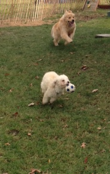
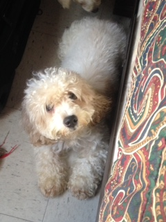

My Life with Mari

I wonder what my life would be like if not with her. Mari brought me out of Argentina where I was once riddled with fleas and ticks and drinking water from a drain spout don't even think I knew where my next meal would come from! I am now in what one might consider 'the lap of luxury'. I'm treated to freshly cooked meat and the water bowl filled with clean fresh water every day, and when it gets hot outside I get ice in it! Fleas are just a rare warm weather occurrence and ticks are even rarer, nothing the organic flea and tick shampoo can't get rid of. Here in the U.S with Mari my life is sweeter. She has promised to care for me and keep me forever. Ahhh the life!

Just the other day Mari took me to the park so that I can run off leash. I met so many dogs to run with, I had a blast!! Then just as we were on our way out of the park after two or so hours she ran into a man that found a dog in the same park just three days before and told her that he had to find a home for it since he already had three dogs. Once he mentioned that the dog looked like me, she was interested and we went to see it. I immediately liked her and thought hmmm a buddy, could this be the one she had wanted to get me for a while? After that meeting she took the dog home to care for and perhaps stay with us to be part of our pack.She actually does look like me but with longer hair. I can tell that she was abandoned because she had long ungroomed hair and stunk like the smelliest cheesiest stinky Doritos, yuck!
So it goes, the dog is brought back home with us and Mari gives her a bath and feeds her, feeling good about caring for her but questioned why on earth did she foster this dog now. I actually heard her say it out loud. I thought, cool now I have someone to play with so that when Mari leaves for work I can play and wrestle and not be bored and lonely when she is not home. She did mention that she wanted me to have a buddy so here she was. I'm glad so far all is working out but Mari is still looking for the person that the dogs' microchip may be linked to but, it seems as if there is no one looking for my new buddy and she might just stay with us. I wonder who would not want her, she is so sweet and gentle I can't imagine abandoning her on a rainy and cold night to starve or get hit by a car. People can be so cruel. I'm very lucky, Mari says that she will never abandon me and hugs me and kisses me daily. The new dog doesn't get it when Mari loves on me. She sits, looks up at us and whines until Mari bends down to pet her too and then she is glad. Sometimes Mari picks her up and she doesn't understand why. The new dog just stiffens up and looks at her but is glad to be held and loved by someone. I think she has adopted us and would hate for Mari to find her original family because she has had a great few days with us.
This new dog told me that she likes us. So far although she was afraid at first,she is now feeling better and knows that Mari has her best interest in mind. I know Mari means well and at first felt a bit overwhelmed because mind you now she has two mouths to feed and two to walk and this new dog doesn't know how to walk on a leash. She just pulls away and walks in an angle and then circles Mari so that she is tangled with the leash. Sometimes the dog tangles me up too and then none of us walk until Mari stops to untangle us. I know my life with Mari is wonderful and if Shia aka Doritos stay's I'm sure she'll agree. All I know for sure is that if not for Mari I would still be scratching and hungry. I have a wonderful fun filled life and I hope that it will stay that way. Argentina may be the country that I was born in but my home and heart now belong to Mari in the United States.